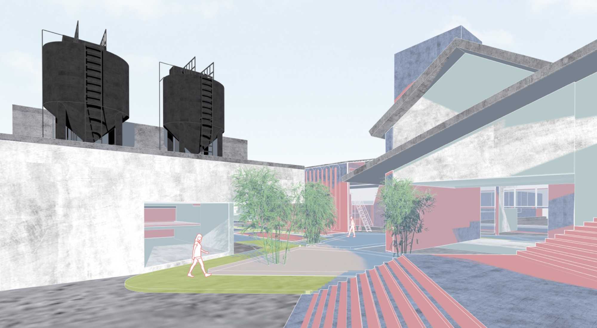
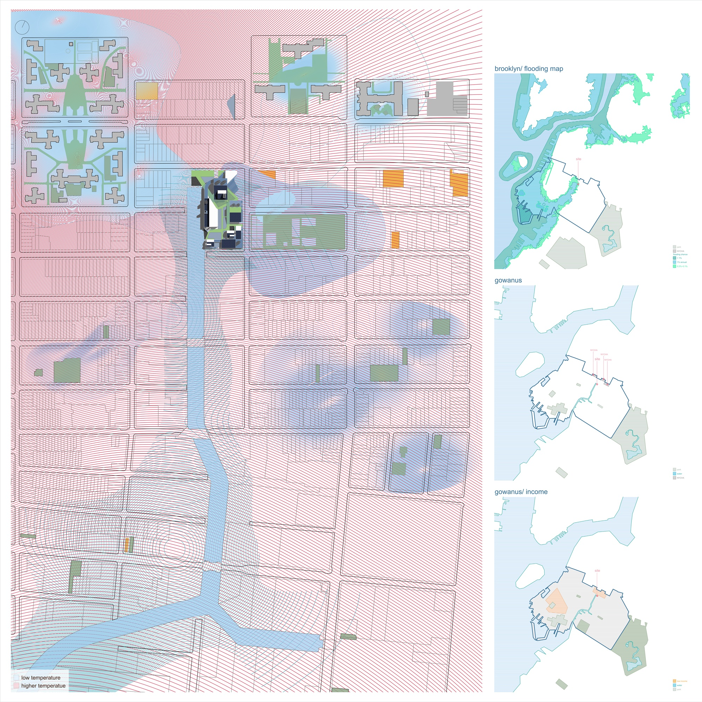
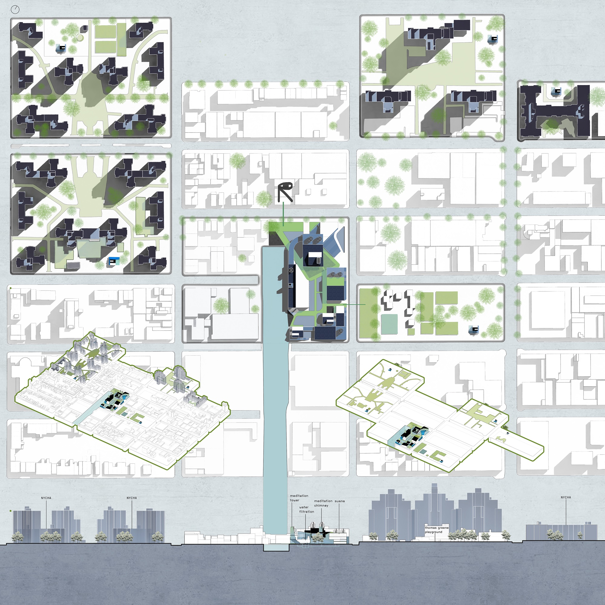
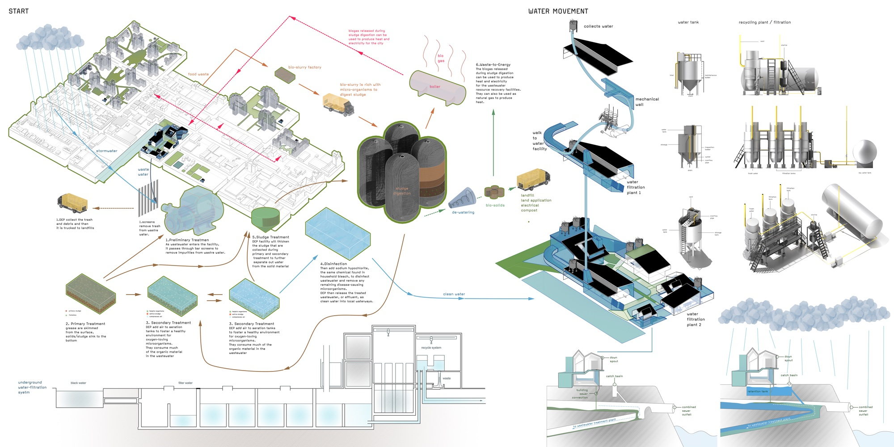
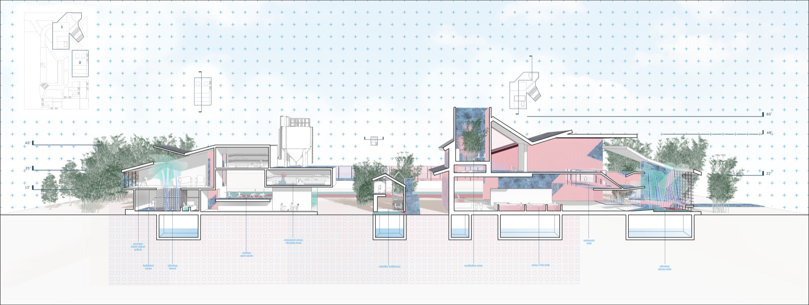
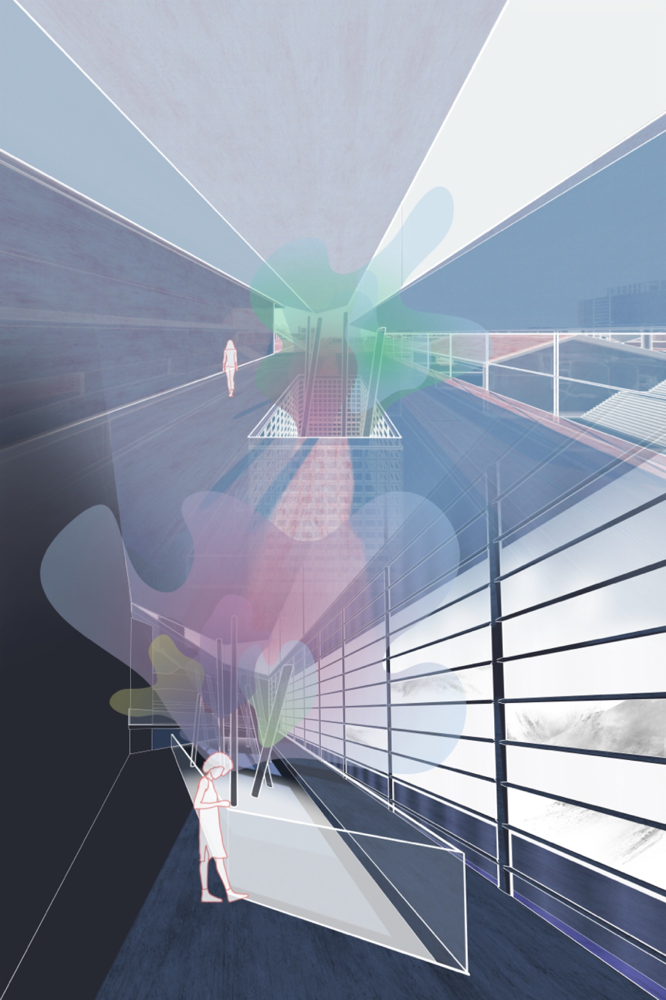

Projects
Viva Natatio
As flooding becomes more frequent due to climate change in New York, having facilities that utilize this excessive amount of water and contribute to building a new culture — or reviving the water culture in New York — could bring nuance to how the environment changes. An ecological shift can be read as an opportunity for a change in lifestyle rather than a crisis.
The Gowanus Water Center contains a water filtration system that integrates into the city's waterworks and a bathhouse portion for human wellness. As water enters the project, rainwater is collected by water tanks, then enters the filtration system inside the facility. Water in the bathhouse nurtures the human body, relieving urban stress. As water leaves the bathhouse, it re-enters the filtration system to be cleaned and reused on-site. The "waste" becomes renewable energy to supplement other mechanics in the facility. This water facility aims to be self-sustainable and support the community in an emergency.

Site Analysis

Site analysis: heat and flooding conditions in Gowanus. Pink: higher temperature zones. Blue: projected flood extent. Satellite bathhouses located in NYCHA; main complex across from local bar/music venue.

Site map: main complex on Gowanus Canal with satellite bathhouses distributed through NYCHA superblocks.
Water System

Water movement: rainwater collection, filtration system integration, bathhouse cycle, and renewable energy recovery.
Plans & Sections

Floor plans: bathhouse and water filtration research lab.

Composite section: sauna / extreme heat (1), satellite bath houses (2), bath house (3).
Olfactory Room

Olfactory room: fragranced streams bring humidity, color, and sensory atmosphere to the interior bath spaces.
Return to Projects